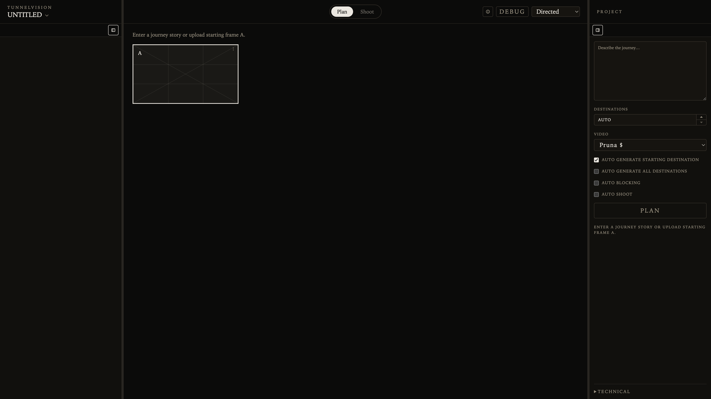

PRODUCT SLICE 5 · SEPTEMBER 9, 2026
Product Slice 5 — Project Video Model
TunnelVision is agentic filmmaking research extending filmmaker Terran Boylan's original TunnelVision technique. This chapter records the Project panel Video control: one generator for every SHOOT in the current project. Pruna remains the development default. Mid-tier Luma Ray Flash 2 720p, Wan 2.2 First/Last Frame, and Seedance 2.0 Fast, plus Seedance 2.5 HQ, are opt-in. Camotion A′/B′ and the locomotion prompt stay the same; only the adapter mapping changes. This is not a Draft vs Final toggle.

Watch the first mid-tier comparison
Three product SHOOT exports of the same enchanted-forest follow-cam journey. Each clip is the assembled legs from one Project video-model choice. Luma maps 6s product shots to 5s, so three legs land near 16s; Wan and Seedance 2.0 Fast keep ~6s legs. These are development comparison takes, not Camotion retuning and not a ranking.
Wan 2.2 First/Last Frame
$$ · 18.2s · 848×464Seedance 2.0 Fast
$$ · 18.1s · 1280×720
This slice records model choice, not a new Camotion result.
Pruna stays the default for development iteration and is not in this comparison. Seedance 2.5 remains the HQ $$$ option. Adapter knobs stay below MediaProvider. A later review can say which generator is worth paying for on this journey; the clips here only prove the product path can switch.